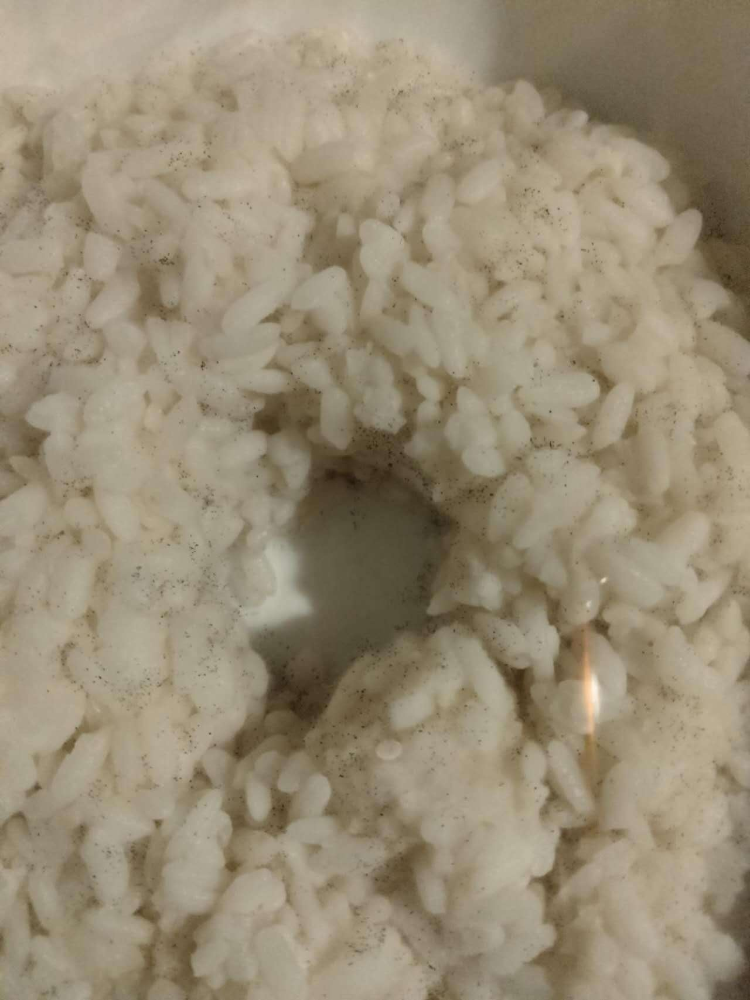
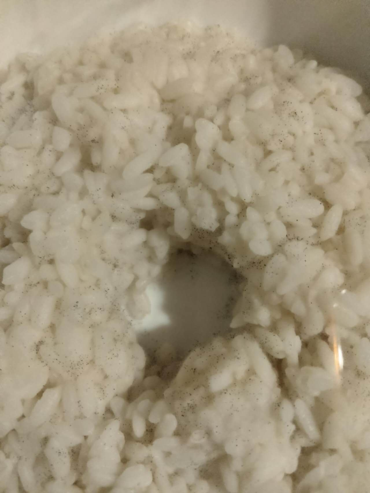
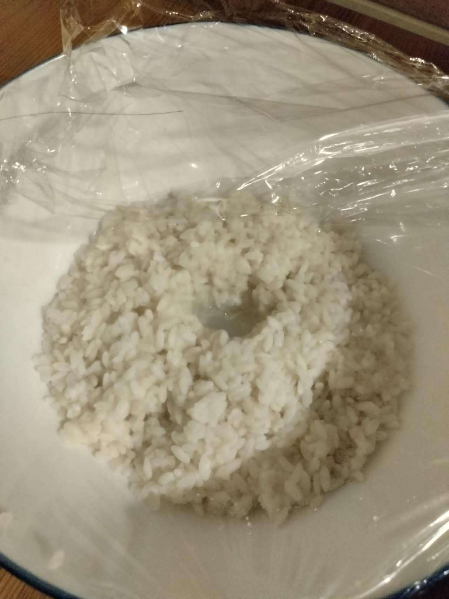
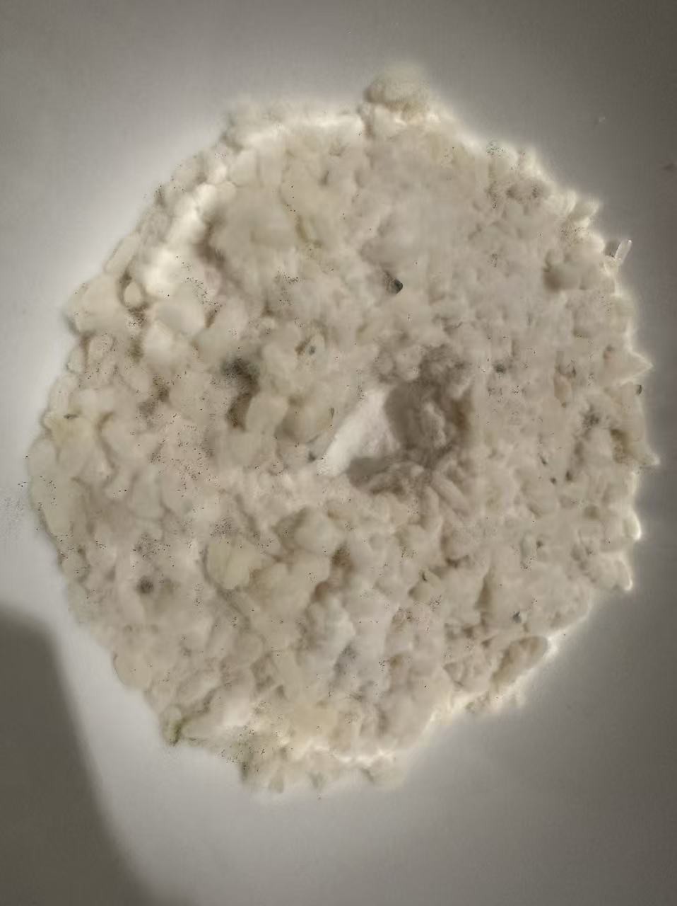
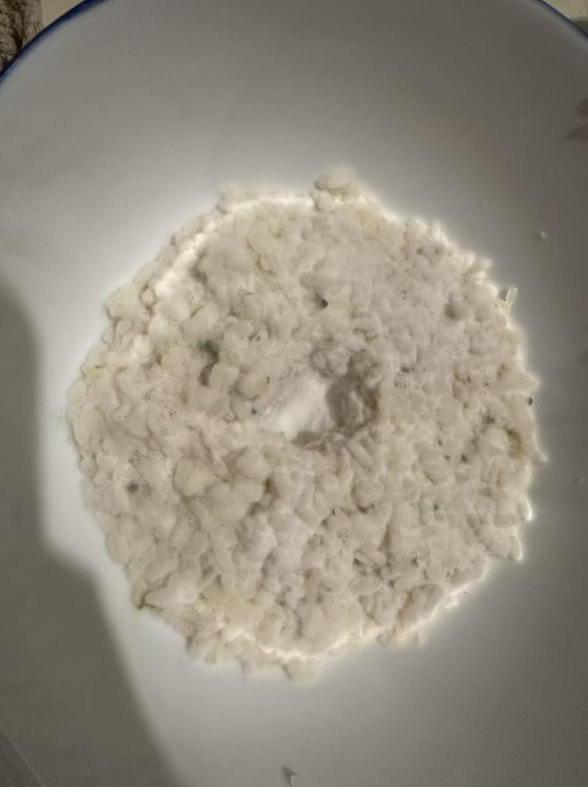
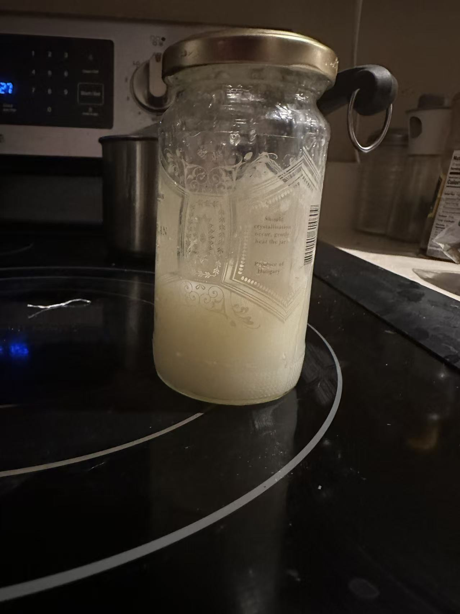

Homemade Rice Wine Experiment
What's rice wine?
Rice wine (米酒) is a traditional Chinese fermented drink. In this project, I fermented rice wine over two weeks under warm conditions and collected samples to observe under a microscope borrowed from my high school research room. The project explores how Chinese rice wine is made using traditional methods, while also examining the science behind fermentation and gaining practical experience and advice for making homemade rice wine.
🔬 Project Overview
Learning Objectives:
- Understand fermentation process
- Learn traditional Chinese brewing techniques
- Explore microbiology of koji mold and yeast
- Experience hands-on traditional fermentation rice-wine
Results & Insights:
After 2 weeks, I produced traditional rice wine successfully, it has a sweet flavor with mild alcohol content. The process required patience and careful attention to temperature control and cleanliness of the environment. Through this project, I also developed a better understanding of fermentation biology and practical techniques for successful rice wine production.
🌾 Ingredients & Materials
Main Ingredients:
- Glutinous rice (sticky rice) - 2 cups
- Chinese rice wine starter (酒药/酒曲) - 1 ball
- Filtered water
- Clean, sterilized jar
Equipment:
- Large glass jar with lid
- Steamer or rice cooker
- Clean cloth
- Thermometer
🔬 Fermentation Process
Step 1: Prepare the Rice
- Wash glutinous rice thoroughly
- Soak overnight in cold water
- Steam until fully cooked but not mushy
- Cool to lukewarm (30–35°C)
Step 2: Add Starter Culture
- Crush rice wine starter ball into powder
- Mix thoroughly with cooled rice
- Transfer to sterilized jar
- Make a small well in center for liquid to collect
Step 3: Fermentation
- Cover jar with clean cloth
- Keep at warm temperature (25–30°C)
- Ferment for 2–3 days
- Liquid (rice wine) will collect in well
Step 4: Secondary Fermentation (Optional)
- Add filtered water to jar
- Seal and ferment additional 1–2 weeks
- Strain and bottle
📊 What's the science behind it
🧫 Fermentation Science
- Koji mold (Aspergillus oryzae) acts like a tiny chemical factory. It releases enzymes that break the rice's starch into simple sugars so other microbes can use them.
- Yeast then eats those sugars and produces alcohol and carbon dioxide (CO₂).
- Temperature matters a lot because the microbes are very sensitive. If the temperature is too hot, it can kill them or cause spoilage; if it's too cold, it could slow fermentation and affect the flavor of the rice wine. So it would be fine just to keep the temperature at about 25 to 30 degrees Celsius.
- When the acids are produced during fermentation, the pH changes. A lower pH often signals that fermentation is progressing and helps prevent harmful bacteria.
🥗 Nutritional Content (what ends up in the drink)
- Alcohol: usually around 2–8%, depending on how long and how strongly it ferments.
- B vitamins: produced by microbes during fermentation.
- Beneficial microbes: some batches contain lactic acid bacteria that may support gut health.
- Enzymes & amino acids: formed that may help with digestion and nutrient breakdown.
🍶 Is homemade rice wine good for you?
It benefits when consumed in moderation, like small amounts of probiotics, antioxidants, and nutrients created during fermentation. Homemade fermentation also has safety risks if cleanliness and temperature aren't controlled.
- Contamination can introduce harmful microbes.
- Alcohol still has downsides if overconsumed.
- It's potentially beneficial in small amounts when made safely, but not automatically "healthy," and safety during brewing is very important.
📸 Project Gallery
Click any photo to view it full-size.






💡 Key Learnings
- Importance of temperature control in fermentation
- Be patient and precise, and maintain cleanliness required for traditional crafts
- Understanding how our ancestors preserved and made rice wine
- Learned the fermentation process, how it works, read multiple rice wine papers to understand how jiuqu/yeast works in it, and found more papers discussing future research ideas in jiuqu/yeast